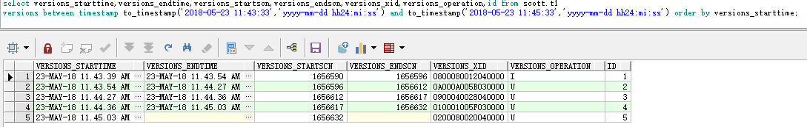

闪回技术
闪回机制
首先必须开启归档模式和闪回恢复区
打开闪回数据库功能会由RVWR进程在闪回区记录闪回日志
通过v$database可以查询是否开启了数据库闪回功能
sys@MYSQL_MA> select flashback_on from v$database;
FLASHBACK_ON
------------------
NO
开启闪回功能
shutdown immediate;
startup mount;
alter database flashback on;
alter system set db_flashback_retention_target=2880; ##可以闪回到多少分钟以前的状态
alter database open;
sys@MYSQL_MA> shutdown immediate;
Database closed.
Database dismounted.
ORACLE instance shut down.
sys@MYSQL_MA> startup mount;
ORACLE instance started.
Total System Global Area 409194496 bytes
Fixed Size 2213856 bytes
Variable Size 360712224 bytes
Database Buffers 41943040 bytes
Redo Buffers 4325376 bytes
Database mounted.
sys@MYSQL_MA> alter database flashback on;
Database altered.
sys@MYSQL_MA> alter system set db_flashback_retention_target=2880;
System altered.
sys@MYSQL_MA> alter database open;
Database altered.
sys@MYSQL_MA> select flashback_on from v$database;
FLASHBACK_ON
------------------
YES
sys@MYSQL_MA> show parameter db_flashback_retention_target;
NAME TYPE VALUE
------------------------------------ ----------- ------------------------------
db_flashback_retention_target integer 2880
[oracle@mysql-master-1003306 mysql_master_1003306]$ ps -ef | grep rvwr
oracle 11369 1 0 17:14 ? 00:00:00 ora_rvwr_orcl
[oracle@mysql-master-1003306 flashback]$ ls -l /oracle/11g/flash_recovery_area/MYSQL_MA/flashback/o1_mf_fj921crk_.flb
-rw-r-----. 1 oracle oinstall 8200192 May 22 17:20 /oracle/11g/flash_recovery_area/MYSQL_MA/flashback/o1_mf_fj921crk_.flb
该文件记录闪回日志
oracle提供了几种可使用的闪回技术，分别是闪回查询，闪回删除，闪回数据归档，闪回数据库，闪回版本查询，闪回事务查询。
闪回查询
1）闪回基本查询
可以查询过去某个时间段的数据库状态， Oracle 会提取所需要的撤销数据（前提是撤销是可用的，即撤销数据还没被覆盖）进行回滚，但这种回滚是临时的，仅针对当前session可见。
select * from scott.t1 as of timestamp to_timestamp('2018-05-22 19:00:00','yyyy-mm-dd hh24:mi:ss');
select * from scott.t1 as of scn 10000;
查询scn
##查询当前scn号
sys@MYSQL_MA> select current_scn from v$database;
CURRENT_SCN
-----------
1624016
##查询可以闪回的最老的scn号
sys@MYSQL_MA> select * from v$flashback_database_log;
OLDEST_FLASHBACK_SCN OLDEST_FL RETENTION_TARGET FLASHBACK_SIZE ESTIMATED_FLASHBACK_SIZE
-------------------- --------- ---------------- -------------- ------------------------
1619546 22-MAY-18 2880 12288000 160579584
实验：
sys@MYSQL_MA> !date
Tue May 22 19:28:16 EDT 2018
sys@MYSQL_MA> select current_scn from v$database;
CURRENT_SCN
-----------
1624016
sys@MYSQL_MA> select count(*) from scott.t1;
COUNT(*)
----------
30
sys@MYSQL_MA> insert into scott.t1 select * from dba_data_files;
5 rows created.
sys@MYSQL_MA> /
5 rows created.
sys@MYSQL_MA> /
5 rows created.
sys@MYSQL_MA> commit;
Commit complete.
sys@MYSQL_MA> select count(*) from scott.t1;
COUNT(*)
----------
45
sys@MYSQL_MA> select count(*) from scott.t1 as of timestamp to_timestamp('2018-05-22 19:28:16','yyyy-mm-dd hh24:mi:ss');
COUNT(*)
----------
30
sys@MYSQL_MA> select current_scn from v$database;
CURRENT_SCN
-----------
1624191
sys@MYSQL_MA> select count(*) from scott.t1 as of scn 1624016;
COUNT(*)
----------
30
2）闪回表
可以将表回退到过去某个时间点， Oracle会先去查询撤销段，提取过去某个时间点之后的所有变更，构造反转这些变更的SQL语句进行回退,闪回操作是一个单独的事务，所以若由于撤销数据过期之类的原因导致无法闪回，整个操作会回滚，不会存在不一致的状态。
flashback table scott.t1 to timestamp to_timestamp('2018-05-22 19:28:16','yyyy-mm-dd hh24:mi:ss');
flashback table scott.t1 to scn 1624016;
启用表闪回首先要在表上支持行移动（在数据字典中设置标识来标识该操作可能会改变行ID，即同一条数据闪回成功后主键都一样，但行ID其实已经发生变化了）
sys@MYSQL_MA> alter table scott.t1 enable row movement;
Table altered.
sys@MYSQL_MA> flashback table scott.t1 to timestamp to_timestamp('2018-05-22 19:28:16','yyyy-mm-dd hh24:mi:ss');
Flashback complete.
sys@MYSQL_MA> select count(*) from scott.t1;
COUNT(*)
----------
30
sys@MYSQL_MA> flashback table scott.t1 to scn 1624016;
Flashback complete.
sys@MYSQL_MA> select count(*) from scott.t1;
COUNT(*)
----------
30
闪回表可能会失败，有可能有以下几种情况：
违反了数据库约束，比如用户不小心删除了子表中的数据，现在想利用闪回表技术进行回退，恰好在这中间，父表中与该数据对应的那条记录也被删除了，在这种情况下，由于违反了外键约束，导致闪回表操作失败了；
撤销数据失效，比如用于支撑闪回操作的撤销数据被覆盖了，这种情况闪回表操作自然会失败；
闪回不能跨越DDL，即在闪回点和当前点之间，表结构有过变更，这种情况闪回操作也会失败。
注意：上述闪回功能都是基于撤销数据的，而撤销数据是会被重写的（Expired会被重写，Active不会被重写），所以，在需要使用这几种闪回功能去恢复数据的时候（确切地说，是需要使用基于撤销数据的闪回功能时），最短时间发现错误，第一时间执行闪回操作，才能最大程度地保证闪回功能的成功。
闪回drop
回收站：实现闪回删除功能，需要使用Oracle回收站（recycle bin），回收站是所有被删除对象及其相依对象的逻辑存储容器，例如当一张表被删除（drop）时，该表及其相依对象并不会马上被数据彻底删除，而是被存放到回收站中。
机制：回收站将用户执行的drop操作记录在一个系统表中，也就是被删除的对象写到一个数据字典中，如果确定不再需要该对象，可以使用purge命令对回收站进行清空。
回收站中的对象会进行重命名，格式如下：
BIN$globalUID$version
BIN:表示becyclebin
globalUID：全局唯一的，二十四字符长的标识对象，该标识于原对象没有任何关系
$version：数据库分配的版本号
回收站的管理：
回收站是否启用
show parameter recyclebin;
回收站的信息的查看
show recyclebin;（查看不到删除的表的索引）
select * from user_recyclebin;（可以查看到删除的表的索引）
select * from dba_recyclebin;（可以查看到删除的表的索引）
清除回收站的对象
purge table 表名字
purge table tablespace 表空间名;
purge table tablespace 表空间名 user 用户名;
purge index 索引名字;
purge recyclebin;全部清空
使用闪回删除的前提条件：
必须是DDL语言
不能是sys或是dba权限的用户，否则查不出记录
例子：
sys@MYSQL_MA> conn scott/scott
Connected.
scott@MYSQL_MA> select count(*) from t1;
COUNT(*)
----------
5
scott@MYSQL_MA> drop table t1;
Table dropped.
scott@MYSQL_MA> show recyclebin;
ORIGINAL NAME RECYCLEBIN NAME OBJECT TYPE DROP TIME
---------------- ------------------------------ ------------ -------------------
T1 BIN$bNYRDdAKDffgUAoKZAowIw==$0 TABLE 2018-05-22:21:00:53
scott@MYSQL_MA> select * from user_recyclebin;
OBJECT_NAME ORIGINAL_NAME OPERATION TYPE TS_NAME
------------------------------ -------------------------------- ------------------------------ ------------------------- ------------------------------
CREATETIME DROPTIME DROPSCN PARTITION_NAME CAN CAN RELATED BASE_OBJECT PURGE_OBJECT SPACE
------------------- ------------------- ---------- -------------------------------- --- --- ---------- ----------- ------------ ----------
BIN$bNYRDdAKDffgUAoKZAowIw==$0 T1 DROP TABLE USERS
2018-05-22:20:28:42 2018-05-22:21:00:53 1626327 YES YES 74120 74120 74120 8
闪回drop
flashback table t1 to before drop;
flashback table t1 to before drop rename to t2;
flashback table "BIN$bNYRDdAMDffgUAoKZAowIw==$0" to before drop;
flashback table "BIN$bNYRDdAMDffgUAoKZAowIw==$0" to before drop rename to t2; ##必须使用双引号
注意：闪回删除只针对Drop命令，注意区分truncate操作和drop操作，truncate称为表截断，会清空表中数据（调节Oracle高水位线实现），表结构不受影响，速度很快，弊端是此过程不会产生任何撤销数据或是重做日志，如果误删，恢复异常麻烦，要慎重使用。而Drop则会删除数据+表结构，闪回删除仅针对Drop操作。
闪回数据归档
闪回数据归档可使表具有回退到过去任何时间点的能力，前面提到的闪回查询，闪回表都会受限于撤销数据是否失效，如果撤销数据被覆盖重写了，闪回操作自然会失败，闪回删除则受限于表空间是否有足够可用空间，而闪回数据归档，则没有这些限制。
实质上就是对undo数据进行归档从而支持更大时间范围内的闪回查询和闪回表等功能，该功能是oracle 11g的新功能，建议在单独的表空间上创建flashback archive，可以单独指定针对哪些表开启flashback archive功能
为scott.t1表创建闪回归档
create tablespace flbtbs datafile '/oracle/11g/oradata/flbtbs01.dbf' size 500M autoextend on;
create flashback archive default flbarch tablespace flbtbs quota 300M retention 1 year;
alter flashback archive flbarch set default;
grant flashback archive on flbarch to scott; ##或者直接赋闪回归档管理员权限 grant flashback archive administer to scott;
conn scott/scott
alter table t1 flashback archive flbarch; ##不指定flbarch的话，将使用上面配置的默认flashback archive，我这里默认也是flbarch，所以也可以使用alter table t1 flashback archive;
闪回数据归档管理
alter flashback archive flbarch add tablespace flbtbs02 quota 500M;
alter flashback archive flbarch modify retention 2 year;
alter flashback archive flbarch purge before timestamp (systimestamp - interval '1' day); ##删除一天前的历史数据
drop flashback archive flbarch;
alter table t1 no flashback archive;
闪回归档信息查询
select * from dba_flashback_archive;
select * from dba_flashback_archive_ts;
select * from dba_flashback_archive_tables;
select * from user_flashback_archive;
select * from user_flashback_archive_tables;
对于开启了闪回归档的表，不能执行如下操作，否则会有ora-55610的报错：
1）drop table
2）alter table move or exchange a partition or subpartition
3）alter table upgrade
如果一定要执行这些操作，可以通过dbms_flashback_archive.diassociate_fba暂时中止和flashback archive的联系，等操作完毕后再重新恢复，或者直接停止flashback archive
scott@MYSQL_MA> drop table t1;
drop table t1
*
ERROR at line 1:
ORA-55610: Invalid DDL statement on history-tracked table
scott@MYSQL_MA> alter table t1 no flashback archive;
Table altered.
scott@MYSQL_MA> drop table t1;
Table dropped.
闪回数据库
关于闪回数据库
闪回操作要在mount状态下执行
闪回完毕后可以以read only模式开启，或者resetlogs方式打开，这样可以执行DML操作
flashback 和recover二者方向正好相反
如下情况无法进行flashback database：
- 重建或者恢复了控制文件
- 表空间被删除
- 数据文件进行了收缩
就是将数据库回退到过去的一个时间点或SCN上，从而实现数据库的恢复，这种恢复时不需要通过备份。
步骤：
shutdown immediate
startup mount exclusive
flashback database to timestamp(to_date(‘2009-12-39 05:52:45’, ’yyyy-mm-dd hh24:mi:ss’));
alter database open resetlogs;
常用sql：
Alter session set nls_data_format=’yyyy-mm-dd hh24:mi:ss’—设置当前会话时间格式
Select oldest_flashback_scn,oldest_flashback_time from V$flashback_database_log;
闪回版本查询
闪回版本查询，提供了一个审计数据行改变的查询功能，通过它可以查到所有已经提交了的行记录。（注意，只包括被提交的记录，还是存放在undo表空间中）
VERSIONS_STARTSCN | 该条记录操作时的SCN或时间，如果为空，表示该行记录是在查询范围外创建的 |
VERSIONS_STARTTIME | |
| VERSIONS_ENDSCN | 该条记录失效时的SCN或时间，如果为空，说明记录当前时间在当前表内不存在，或者已经被删除了，可以配合着VERSIONS_OPERATION列来看，如果VERSIONS_OPERATION列值为D，说明该列已被删除，如果该列为空，则说明记录在这段时间无操作 |
VERSIONS_ENDTIME | |
VERSIONS_XID | 该操作的事务ID |
VERSIONS_OPERATION | 对该行执行的操作：I表示INSERT，D表示DELETE，U表示UPDATE 提示：对于索引键的update操作，版本查询可能会将其识别成两个操作：DELETE和INSERT |
select versions_starttime,versions_endtime,versions_startscn,versions_endscn,versions_xid,versions_operation,id from scott.t1
versions between timestamp
to_timestamp('2018-05-23 11:43:33','yyyy-mm-dd hh24:mi:ss') and to_timestamp('2018-05-23 11:45:33','yyyy-mm-dd hh24:mi:ss')
order by versions_starttime;

闪回事务查询
闪回事务查询实际上是闪回版本查询的一个扩充，通过它可以审计某个事务甚至撤消一个已经提交的事务。
主要视图：flashback_transaction_query，从该视图可以获取事务的历史操作记录以及撤消语句（undo_sql），如果要撤消此操作可以使用此sql
思路：
1）先用版本查询的方法得到versions_xid即事务id的值
select versions_starttime,versions_endtime,versions_startscn,versions_endscn,versions_xid,versions_operation,id from scott.t1
versions between timestamp to_timestamp('2018-05-23 12:26:00','yyyy-mm-dd hh24:mi:ss') and to_timestamp('2018-05-23 12:58:00','yyyy-mm-dd hh24:mi:ss') order by versions_starttime;

2）获取事务对应的undo_sql
select * from flashback_transaction_query where XID='0600130036040000';

3）运行undo_sql进行撤消操作
很多时候在首次使用flashback_transaction_query 执行闪回事务查询是，列operation全是unknown 而且undo_sql 也为空，
SQL> select operation,undo_sql from flashback_transaction_query
2 where xid=hextoraw('09000E0065060000');
OPERATION UNDO_SQL
-------------------- ----------------------------------------------------------------------
UNKNOWN
BEGIN
出现这种情况的原因可能有如下两种
一：因为撤销表空间有限，因此flashback_transaction_query视图中只包含一部分事务，对于任何所选事务不再显示在撤销表空间的DML，operation列的值是unknown。
二：使用闪回查询前，必须先启用重做日志流的其他日志记录。重做日志流数据时撤销表空间记录的信息的补充，闪回事务查询时既需要增强的重做信息，也需要撤销表空间的撤销信息。
首先，使用alter database命令，启用对DML更改引用的列值和主键值的日志记录：sys@MYSQL_MA> alter database add supplemental log data;Database altered.sys@MYSQL_MA> alter database add supplemental log data (primary key) columns;Database altered.注意，只有对alter database命令之后的DML操作在flashback_transaction_query中列operation和undo_sql才会有相应的值